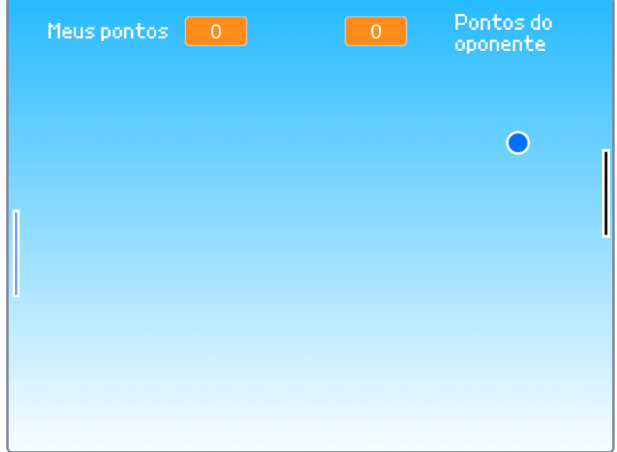
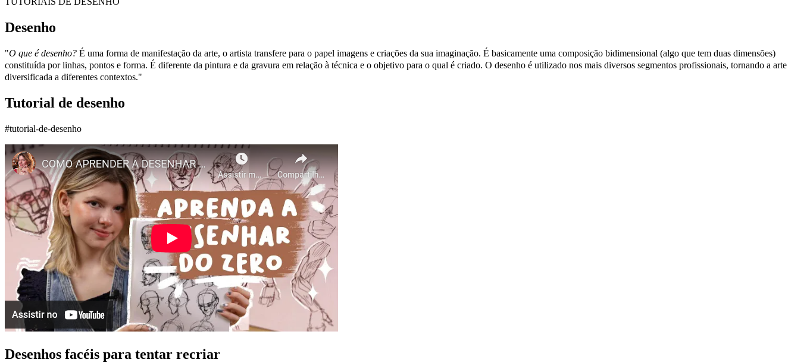

Meus projetos

Projeto Agrinho: Jogo de perguntas e respostas
Este projeto foi feito para o Agrinho de 2024, na disciplina de pensamento computacional junto de geografia. Escolhemos um jogo de perguntas e respostas sobre a agricultura familiar.
Jogo do Pong
Este projeto é o tradicial jogo do Pong feito no Scrach.Também foi realizado em sala de aula, para a disciplina de pensamento computacional.

Site para aprender a desenhar
Este foi nosso primeiro projeto com HTML,que apesar de simples, foi bastante desafiador.